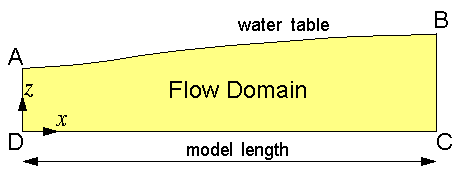
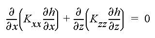
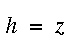
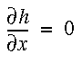
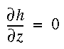
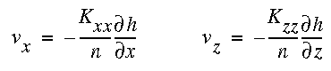

Steady-State Topography-Driven FlowSkip ahead to run the modelIntroductionA topography-driven flow system is one in which ground water flows from higher-elevation recharge areas, where hydraulic head is higher, to lower-elevation discharge areas, where hydraulic head is lower. This type of flow system is commonly encountered in ground-water basins. The main factors that control ground-water flow are basin geometry, shape of the water table, and the distribution of hydraulic properties. A key purpose of the TopoDrive model is to enable the user to investigate how these factors control ground-water flow.  For a two-dimensional vertical section, the boundaries of the flow domain (see above figure) are as follows :
The no-flow boundaries might represent ground-water flow divides or low-permeability bedrock that bounds the basin. Note that by specifying the position of the water table, it is assumed that the pattern of recharge and discharge is such that the water table is maintained at steady state. Governing EquationSteady-state flow of ground water in the vertical section is governed by the equation  where h is hydraulic head, and Kxx and Kzz are the principal values of the hydraulic conductivity tensor. The principal directions are assumed to be parallel to the cartesian axes xand z. Boundary ConditionsAssuming the position of the water table is known, the boundary condition along the water table (AB) is  where z is the elevation of the water table. Along the vertical boundaries BC and AD, the no-flow boundary condition is  Along bottom boundary CD, the no-flow boundary condition is  The computer model TopoDrive solves the above equations by the finite element method. The flow domain is represented by a deformed rectangular mesh, and each quadrilateral cell is divided into two triangular elements. Linear basis functions are used in the finite element formulation. After solving for hydraulic head h, the x and z components of the average interstitial velocity vector are computed by  where n is porosity. The velocity vectors are used for calculating flow paths and the advective movement of fluid particles.
|